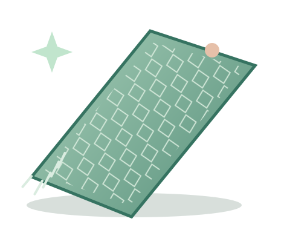
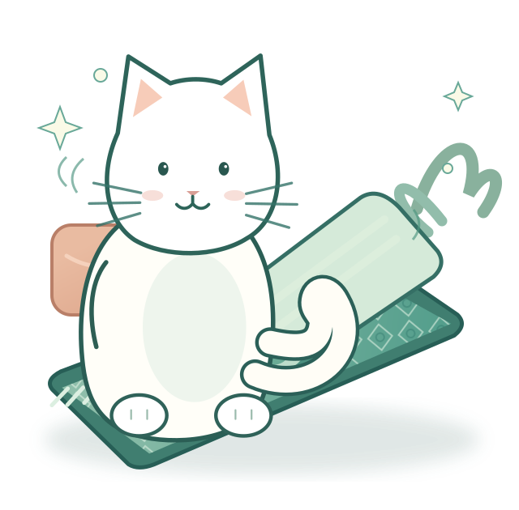
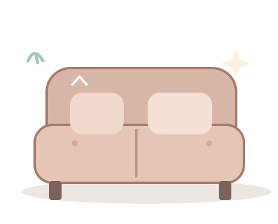
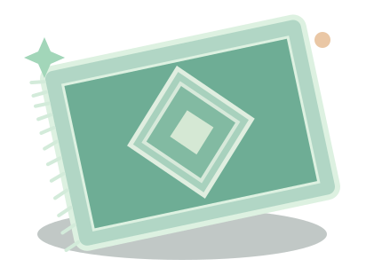
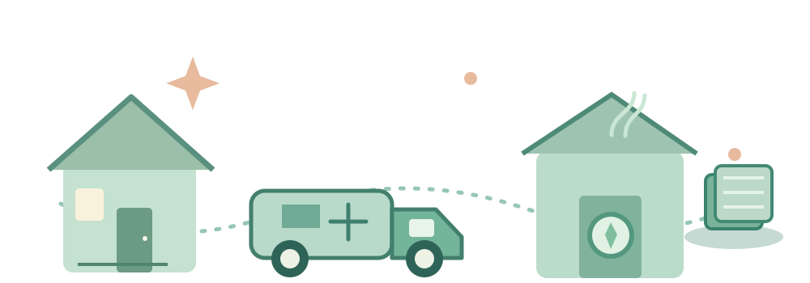
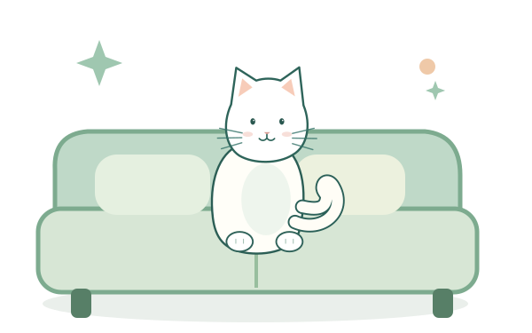
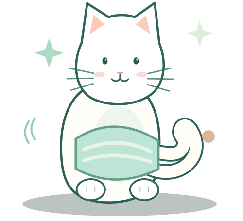
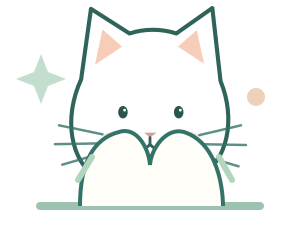
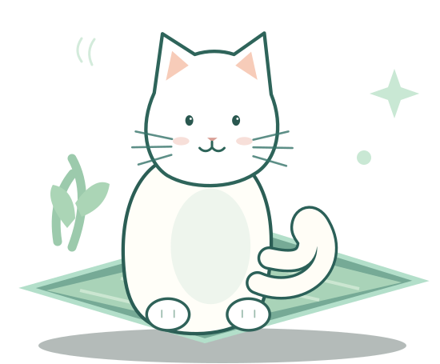

ПОПУЛЯРНОЕ НАПРАВЛЕНИЕ
Стирка ковров
Заберём из дома, постираем, высушим и привезём обратно — без лишних хлопот.
Рассчитать площадь
Заберём ковёр на стирку и привезём обратно. А мягкую мебель освежим прямо у вас дома.
Заботимся о доме и деталяхС 2019 года, по информации компании

Стирка ковров с доставкой от двери до двери
Подбираем способ чистки под изделие и загрязнения
Условие, заявленное компанией; детали уточняются
От любимого ковра до дивана, на котором собирается вся семья.
Заберём из дома, постираем, высушим и привезём обратно — без лишних хлопот.
Рассчитать площадь
Диваны, кресла и другие предметы — оценим задачу по вашему описанию.
Выбрать изделие
Добавьте один или несколько ковров. Мы посчитаем площадь и соберём понятный запрос на предварительную оценку.

ДлинаШиринаЗапрос копируется в буфер обмена. Данные никуда не отправляются автоматически.
Вы отдыхаете дома. Мы показываем, как обычно организуется путь ковра.

Иллюстрация процесса, не фотография транспорта или цеха компанииРассказываете о ковре, размерах и месте забора.
Время и условия забора согласуются индивидуально.
Способ обработки подбирают с учётом изделия.
Чистый ковёр привозят обратно по договорённости.
Наведите разделитель и посмотрите, как выглядит идея «до / после». Пока это авторская иллюстрация: реальные фото работ можно добавить только с разрешения компании.
Реальные работы в VKИллюстративное сравнение. Не документирует реальный заказ.
Собрали удобную форму для предварительного обращения по химчистке мягкой мебели — без длинных переписок о деталях.

Фотография останется на вашем устройстве. Для передачи её потребуется прикрепить в переписке самостоятельно.

«Белый кот» — сервис стирки ковров и химчистки мебели, который, по информации сообщества, работает с 2019 года. Компания рассказывает о выполненных заказах, забирает ковры и доставляет их обратно в Вологде и Череповце.
Перейти в сообщество
Стоимость зависит от размера и особенностей изделия. В демоверсии можно рассчитать площадь и подготовить запрос. Актуальные цены уточняются у компании.
Компания заявляет услугу забора и доставки. Доступность по вашему адресу, график и возможная доплата согласуются при обращении.
Срок зависит от изделия и загрузки. Точные сроки можно узнать у представителя компании до передачи ковра.
Компания работает со сложными загрязнениями, но результат зависит от типа волокна, состава пятна и предыдущей обработки. Полное удаление всех пятен заранее не гарантируется.
В услугах сообщества заявлена химчистка мягкой мебели. В форме выше можно описать изделие и подготовить вопрос о возможности выезда.
В описании сообщества упоминаются гарантийные условия, однако их объём и ограничения необходимо уточнять непосредственно у компании. Демоверсия не устанавливает гарантий.
Выберите город, соберите запрос и свяжитесь с «Белым котом» в официальном сообществе.
Телефон, адреса и актуальные тарифы не подтверждены — не публикуются в этой демоверсии.
